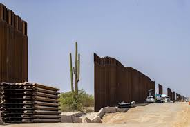

The Greater the Disaster, the Greater the Profits

The Border-Industrial Complex in the Post-Trump Era
BY TODD MILLER
In late February, I drove to see the Trump wall in Sasabe, Arizona. As soon as I parked, a green-striped Border Patrol vehicle stationed a quarter of a mile away began to creep down the dirt road toward us. Just ahead, a dystopian “No Trespassing” sign was flapping in the wind. It was cold as I stepped out of the car with my five-year-old son, William. The wall ahead of us, 30-feet high with steel bollards, was indeed imposing as it quavered slightly in the wind. Through its bars we could see Mexico, a broken panorama of hills filled with mesquites backed by a blue sky.
The Homeland Security vehicle soon pulled up next to us. An agent rolled down his window and asked me, “What are you doing? Joyriding?”
After I laughed in response to a word I hadn’t heard in years, the agent informed us that we were in a dangerous construction zone, even if this part of the wall had been built four months earlier. I glanced around. There were no bulldozers, excavators, or construction equipment of any sort. I wondered whether the lack of machinery reflected the campaign promise of the recently inaugurated Joe Biden that “not another foot” of Trump’s wall would be built.
Indeed, that was why I was here — to see what the border looked like as the post-Trump era began. President Biden had started his term with strong promises to reverse the border policies of his predecessor: families torn apart would be reunited and asylum seekers previously forced to stay in Mexico allowed to enter the United States. Given the Trump years, the proposals of the new administration sounded almost revolutionary.
And yet something else bothered me as we drove away: everything looked the same as it had for years. I’ve been coming to this stretch of border since 2001. I’ve witnessed its incremental disfigurement during the most dramatic border fortification period in this country’s history. In the early 2000s came an influx of Border Patrol agents, followed in 2007 by the construction of a 15-foot wall (that Senator Joe Biden voted for), followed by high-tech surveillance towers, courtesy of a multi-billion-dollar contract with the Boeing Corporation.
Believe me, the forces that shaped our southern border over the decades have been far more powerful than Donald Trump or any individual politician. During the 2020 election, it was commonly asserted that, by getting rid of Trump, the United States would create a more humane border and immigration system. And there was a certain truth to that, but a distinctly limited one. Underneath the theater of partisan politics, there remains a churning border-industrial complex, a conjunction of entrenched interests and relationships between the U.S. government — particularly the Department of Homeland Security (DHS) — and private corporations that has received very little attention.
The small border town of Sasabe and its surrounding region is a microcosm of this.
The cumulative force of that complex will now carry on in Trump’s wake. Indeed, during the 2020 election the border industry, created through decades of bipartisan fortification, actually donated more money to the Biden campaign and the Democrats than to Trump and the Republicans.
The Complex
In the 12 years from 2008 to 2020, Customs and Border Protection (CBP) and Immigration and Customs Enforcement (ICE) dolled out 105,000 contracts, or a breathtaking average of 24 contracts a day, worth $55 billion to private contractors. That sum exceeded their $52 billion collective budgets for border and immigration enforcement for the 28 years from 1975 to 2003. While those contracts included ones for companies like Fisher Sand and Gravel that built the 30-foot wall my son and I saw in Sasabe, many of them — including the most expensive — went to companies creating high-tech border fortification, ranging from sophisticated camera systems to advanced biometric and data-processing technologies.
This might explain the border industry’s interest in candidate Biden, who promised: “I’m going to make sure that we have border protection, but it’s going to be based on making sure that we use high-tech capacity to deal with it.”
Behind that bold, declarative sentence lay an all-too-familiar version of technological border protection sold as something so much more innocuous, harmless, and humane than what Trump was offering. As it happens, despite our former president’s urge to create a literal wall across hundreds of miles of borderlands, high-technology has long been and even in the Trump years remained a large part of the border-industrial complex.
One pivotal moment for that complex came in 2005 when the deputy secretary of the Department of Homeland Security, Michael Jackson (previously Lockheed Martin’s chief operating officer), addressed a conference room of border-industry representatives about creating a virtual or technological wall. “This is an unusual invitation,” he said then. “I want to make sure you have it clearly, that we’re asking you to come back and tell us how to do our business. We’re asking you. We’re inviting you to tell us how to run our organization.”
Of course, by then, the border and immigration enforcement system had already been on a growth spurt. During President Bill Clinton’s administration (1993-2001), for example, its annual budgets had nearly tripled from $1.5 billion to $4.3 billion. Clinton, in fact, initiated the immigration deterrence system still in place today in which Washington deployed armed agents, barriers, and walls, as well as high-tech systems to block the traditional urban places where immigrants had once crossed. They were funneled instead into dangerous and deadly spots like the remote and brutal Arizona desert around Sasabe. As Clinton put it in his 1995 State of the Union address:
“[O]ur administration has moved aggressively to secure our borders more by hiring a record number of new border guards, by deporting twice as many criminal aliens as ever before, by cracking down on illegal hiring, by barring welfare benefits to illegal aliens.”
Sound familiar?
The Clinton years, however, already seemed like ancient times when Jackson made that 2005 plea. He was speaking in the midst of a burgeoning Homeland Security era. After all, DHS was only created in 2002 in the wake of the 9/11 attacks. In fact, during George W. Bush’s years in office, border and immigration enforcement budgets grew from $4.2 billion in 2000 to $15.2 billion in 2008 — more, that is, than during any other presidency including Donald Trump’s. Under Bush, that border became another front in the war on terror (even if no terrorists crossed it), opening the money faucets. And that was what Jackson was underscoring — the advent of a new reality that would produce tens of thousands of contracts for private companies.
In addition, as U.S. war efforts in Afghanistan and Iraq began to wane, many security and defense companies pivoted toward the new border market. As one vendor pointed out to me at a Border Security Expo in Phoenix in 2012, “We are bringing the battlefield to the border.” That vendor, who had been a soldier in Afghanistan a few years earlier, smiled confidently, the banners of large weapons-makers like Raytheon hanging above him. At the time (as now), an “unprecedented boom period” was forecast for the border market. As the company VisionGain explained then, a “virtuous circle… would continue to drive spending in the long term based on three interlocking developments: ‘illegal immigration and terrorist infiltration,’ more money for border policing in ‘developing countries,’ and the ‘maturation’ of new technologies.”
Since 9/11, border-security corporate giants became big campaign contributors not only to presidential candidates, but also to key members of the Appropriations Committees and the Homeland Security Committees (both House and Senate) — all crucial when it came to border policies, contracts, and budgets. Between 2006 and 2018, top border contractors like General Dynamics, Lockheed Martin, Northrop Grumman, and Raytheon contributed a total of $27.6 million to members of the House Appropriations Committee and $6.5 million to members of the House Homeland Security Committee. And from 2002 to 2019, there were nearly 20,000 reported lobbying “visits” to congressional offices related to homeland security. The 2,841 visits reported for 2018 alone included ones from top CBP and ICE contractors Accenture, CoreCivic, GeoGroup, L3Harris, and Leidos.
By the time Donald Trump entered the White House in 2017, the border-industrial complex was truly humming. That year, he would oversee a $20-billion border and immigration budget and have at his disposal nearly 20,000 Border Patrol agents (up from 4,000 in 1994), 650 miles of already built walls and barriers, billions of dollars in border technology then in place, and more than 200 immigration-detention centers across the United States.
He claimed he was going to build his very own “big, fat, beautiful wall,” most of which, as it turned out, already existed. He claimed that he was going to clamp down on a border that was already remarkably clamped down upon. And in his own fashion, he took it to new levels.
That’s what we saw in Sasabe, where a 15-foot wall had recently been replaced with a 30-foot wall. As it happened, much of the 450 miles of wall the Trump administration did, in the end, build really involved interchanging already existing smaller barriers with monstrous ones that left remarkable environmental and cultural destruction in their wake.
Trump administration policies forced people seeking asylum to wait in Mexico, infants to appear in immigration court, and separated family members into a sprawling incarceration apparatus whose companies had been making up to $126 per person per day for years. He could have done little of this without the constantly growing border-industrial complex that preceded him and, in important ways, made him.
Nonetheless, in the 2020 election campaign, the border industry pivoted toward Biden and the Democrats. That pivot ensured one thing: that its influence would be strong, if not preeminent, on such issues when the new administration took over.
The Biden Years Begin at the Border
In early January 2021, Biden’s nominee to run DHS, Alejandro Mayorkas disclosed that, over the previous three years, he had earned $3.3 million from corporate clients with the WilmerHale law firm. Two of those clients were Northrop Grumman and Leidos, companies that Nick Buxton and I identified as top border contractors in Biden’s Border: The Industry, the Democrats and the 2020 Election, a report we co-authored for the Transnational Institute.
When we started to look at the 2020 campaign contributions of 13 top border contractors for CBP and ICE, we had no idea what to expect. It was, after all, a corporate group that included producers of surveillance infrastructure for the high-tech “virtual wall” along the border like L3Harris, General Dynamics, and the Israeli company Elbit Systems; others like Palantir and IBM produced border data-processing software; and there were also detention companies like CoreCivic and GeoGroup.
To our surprise, these companies had given significantly more to the Biden campaign ($5,364,994) than to Trump ($1,730,435). In general, they had shifted to the Democrats who garnered 55% of their $40 million in campaign contributions, including donations to key members of the House and Senate Appropriations and Homeland Security committees.
It’s still too early to assess just what will happen to this country’s vast border-and-immigration apparatus under the Biden administration, which has made promises about reversing Trumpian border policies. Still, it will be no less caught in the web of the border-industrial complex than the preceding administration.
Perhaps a glimpse of the future border under Biden was offered when, on January 19th, Homeland Security secretary nominee Mayorkas appeared for his Senate confirmation hearings and was asked about the 8,000 people from Honduras heading for the U.S. in a “caravan” at that very moment. The day before, U.S.-trained troops and police in Guatemala had thwarted and then deported vast numbers of them as they tried to cross into that country. Many in the caravan reported that they were heading north thanks to back-to-back catastrophic category 4 hurricanes that had devastated the Honduran and Nicaraguan coasts in November 2020.
Mayorkas responded rather generically that if people were found to qualify “under the law to remain in the United States, then we will apply the law accordingly, if they do not qualify to remain in the United States, then they won’t.” Given that there is no climate-refugee status available to anyone crossing the border that meant most of those who finally made it (if they ever did) wouldn’t qualify to stay.
It’s possible that, by the time I went to see that wall with my son in late February, some people from that caravan had already made it to the border, despite endless obstacles in their path. As we drove down Highway 286, also known as the Sasabe Road, there were reports of undocumented people from Guatemala, Honduras, El Salvador, and Mexico all traveling through the rugged Baboquivari mountain range to the west of us and the grim canyons to the east of us in attempts to avoid the Border Patrol and its surveillance equipment.
When President Dwight D. Eisenhower warned Americans against what he dubbed “the military-industrial complex” in 1961, he spoke of its “total influence — economic, political, even spiritual… felt in every city, every statehouse, every office of the Federal government.” Sixty years later, something similar could be said of the ever-expanding border-industrial complex. It needs just such climate disasters and just such caravans (or, as we’re seeing right now, just such "crises" of unaccompanied minors) to continue its never-ending growth, whether the president is touting a big, fat, beautiful wall or opting for high-tech border technology.
For my son and me, the enforcement apparatus first became noticeable at a checkpoint 25 miles north of the international boundary. Not only were green-uniformed agents interrogating passengers in any vehicle heading northwards, but a host of cameras focused on the vehicles passing by.
Whether they were license-plate readers or facial-recognition cameras I had no way of knowing. What I did know was that Northrop Grumman (which contributed $649,748 to Joe Biden and $323,014 to Donald Trump in the 2020 election campaign) had received a valuable contract to ensure that CBP’s biometric system included “modalities” of all sorts — face and voice data, iris recognition, scars and tattoos, possibly even DNA sample collection, and information about “relationship patterns” and “encounters” with the public. And who could tell if the Predator B drones that General Atomics produces — oh, by the way, that company gave $82,974 to Biden and $51,665 to Trump in 2020 — were above us (as they regularly are in the border regions) using Northrup Grumman’s VADER “man-hunting” radar system first deployed in Afghanistan?
As we traveled through that gauntlet, Border Patrol vehicles were everywhere, reinforcing the surveillance apparatus that extends 100 miles into the U.S. interior. We soon passed a surveillance tower at the side of the road first erected by the Boeing Corporation and renovated by Elbit Systems ($5,553 to Biden, $5,649 to Trump), one of dozens in the area. On the other side of that highway was a gravel clearing where a G4S ($49,233 to Biden, $33,019 to Trump) van usually idles. It’s a mobile prison the Border Patrol uses to transport its prisoners to short-term detention centers in Tucson. And keep in mind that there was so much we couldn’t see like the thousands of implanted motion sensors manufactured by a host of other companies.
Traveling through this border area, it’s hard not to feel like you’re in a profitable version of a classic panopticon, a prison system in which, wherever you might be, you’re being watched. Even five-year-old William was startled by such a world and, genuinely puzzled, asked me, “Why do the green men,” as he calls the Border Patrol, “want to stop the workers?”
By the time we got to that shard of Trump’s “big, fat, beautiful” wall, it seemed like just a modest part of a much larger system that left partisan politics in the dust. At its heart was never The Donald but a powerful cluster of companies with an active interest in working on that border until the end of time.
Just after the agent told us that we were in a construction zone and needed to leave, I noticed a pile of bollards near the dirt road that ran parallel to the wall. They were from the previous wall, the one Biden had voted for in 2006. As William and I drove back to Tucson through that gauntlet of inspection, I wondered what the border-industrial world would look like when he was my age and living in what could be an even more extreme world filled with ever more terrified people fleeing disaster.
And I kept thinking of that discarded pile of bollards, a reminder of just how easy it would be to tear that wall and the world that goes with it down.